Projeto de estágio · 2026
Sistema de gerenciamento e manutenção de ônibus
O projeto da SulBrasil Viagens e Turismo é uma aplicação web criada para centralizar o controle de viagens, frota, funcionários e manutenção dos ônibus. A solução substitui consultas manuais por uma API integrada, telas de gestão e um dashboard operacional com dados reais.
- Nome do projeto
- Sistema de gerenciamento e manutenção de ônibus
- Empresa
- SulBrasil Viagens e Turismo
- Professor orientador
- Eron Ponce Pereira
- Aluno
- Davi de Vergines Guilherme
01 · Sobre o projeto
Uma plataforma simples para organizar a operação
A SulBrasil Viagens e Turismo precisa acompanhar viagens, motoristas, ônibus e manutenções de forma confiável. O sistema organiza essas informações em um ambiente único e reduz o risco de conflito de agenda, veículo indisponível ou cadastro incompleto.
Problema observado
- Dependência de controles manuais para consultar viagens e veículos.
- Dificuldade para saber se um ônibus está disponível para nova viagem.
- Risco de selecionar motorista inativo ou veículo em situação incompatível.
- Informações operacionais espalhadas em telas e documentos diferentes.
Solução desenvolvida
- Cadastro e consulta de funcionários, motoristas, viagens e ônibus.
- Dashboard com indicadores reais extraídos do banco de dados.
- Validações no back-end para proteger histórico e vínculos de viagens.
- Autenticação pelo próprio front-end, sem depender da área administrativa.
02 · Sistema
Funcionalidades implementadas
A aplicação foi construída com telas objetivas para consulta, cadastro, edição e acompanhamento operacional. As ações administrativas respeitam permissões e as regras principais ficam protegidas na API.
Dashboard operacional
Apresenta viagens próximas, situação da frota, funcionários ativos, motoristas disponíveis e alertas operacionais calculados a partir dos registros reais.
Gerenciar viagens
Permite cadastrar, consultar, editar e excluir viagens, vinculando motorista ativo e ônibus disponível conforme período informado.
Gerenciar ônibus
Controla identificação, placa, modelo, capacidade, status operacional, observações e inativação lógica da frota.
Gerenciar funcionários
Reúne dados de cadastro, cargo, status, contato e informações importantes para motoristas e secretaria.
Autenticação
A entrada no sistema acontece diretamente no front-end, usando sessão do Django e grupos de permissão para secretário e motorista.
Regras de integridade
A API bloqueia placa duplicada, ônibus indisponível em viagens, conflitos de período e exclusões que comprometeriam o histórico.
03 · Telas do sistema
Principais telas da aplicação
Os prints abaixo mostram a versão local do sistema em funcionamento. Eles ajudam o leitor a entender como a autenticação, o dashboard e os cadastros se conectam na rotina de uso.
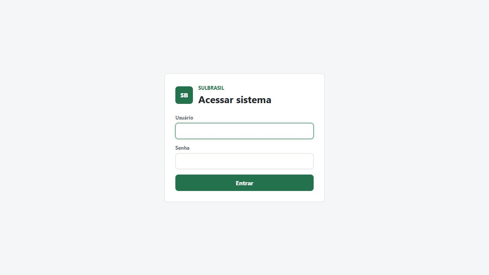
Entrada no sistema
A autenticação fica no próprio front-end, permitindo que o usuário acesse as telas protegidas sem depender da área administrativa do Django.
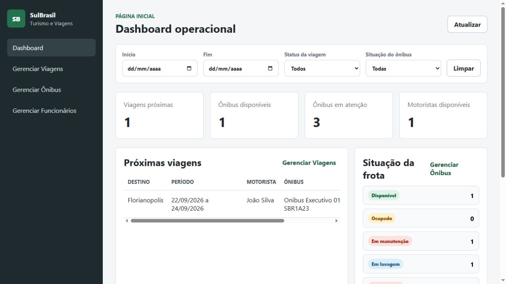
Indicadores operacionais
Reúne viagens próximas, ônibus disponíveis, frota em atenção e motoristas disponíveis, com filtros por período, status de viagem e situação do ônibus.
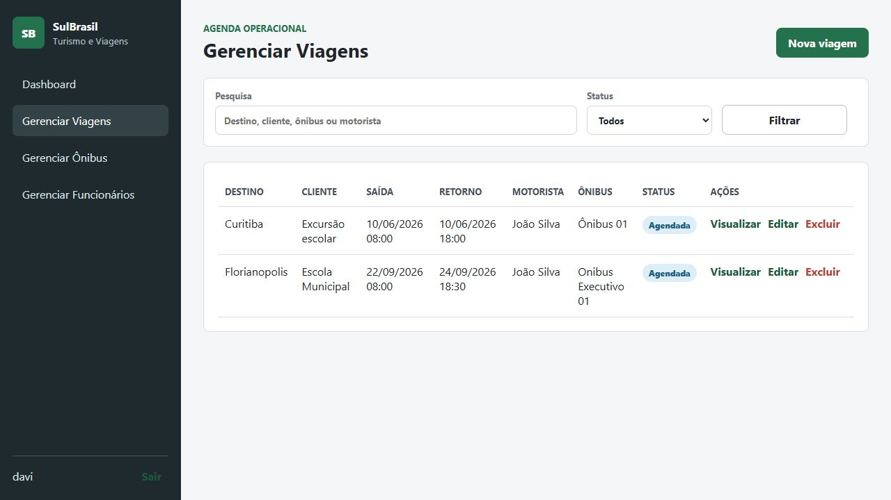
Agenda e controle de viagens
A tela permite pesquisar, filtrar, cadastrar, editar, visualizar e excluir viagens, mantendo vínculos com motorista ativo e ônibus disponível.
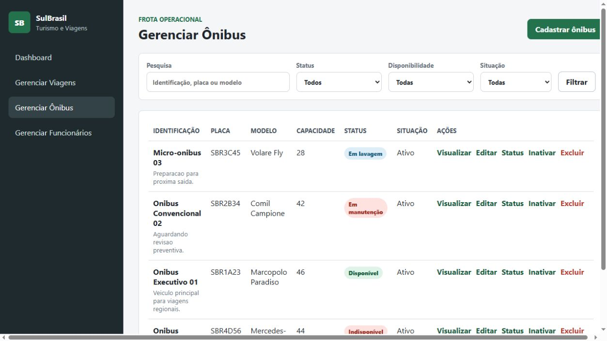
Status dos ônibus
Exibe identificação, placa, modelo, capacidade, situação e ações da frota. O status operacional orienta se o ônibus pode ser usado, inativado ou enviado para manutenção.
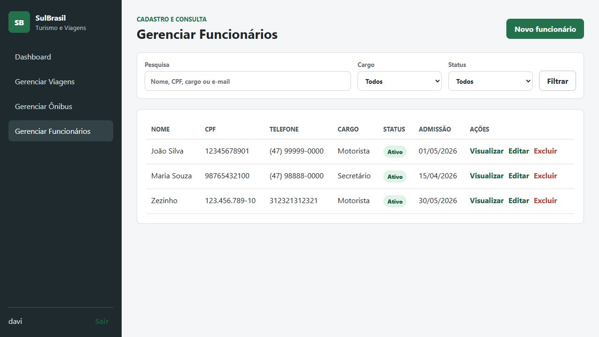
Cadastro de equipe
Organiza dados de funcionários, cargos, status e contatos. A listagem também serve como base para selecionar motoristas nas viagens.
04 · Diagramas e modelagem
Documentação visual do projeto
Os diagramas registram o comportamento esperado das telas, as mudanças de estado e a estrutura de dados usada como referência para implementar as regras do sistema.
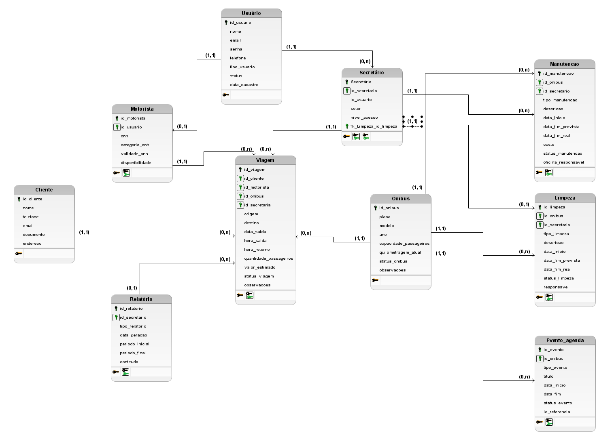
Modelo de dados
Relaciona usuário, secretário, motorista, cliente, viagem, ônibus, manutenção, limpeza, relatório e agenda.
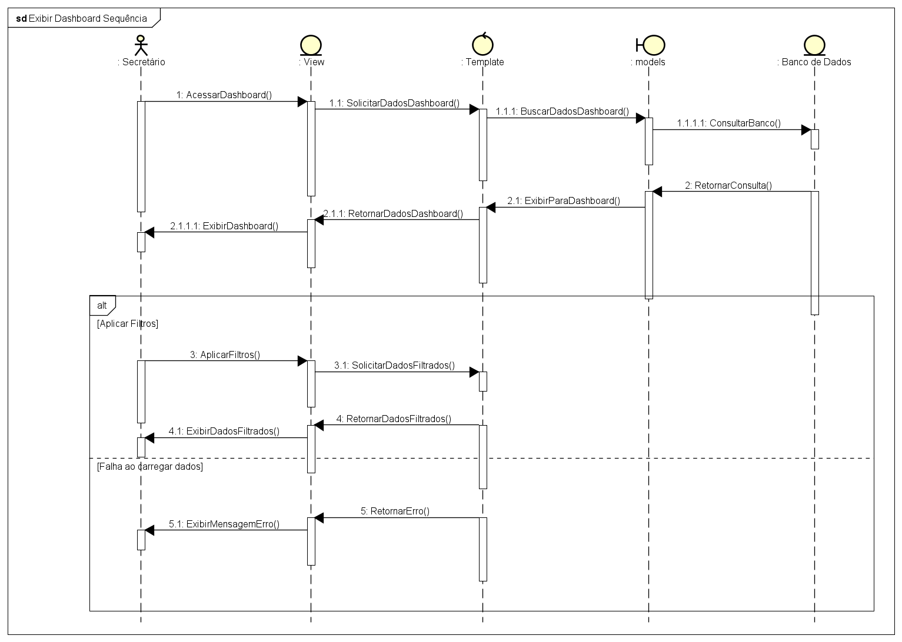
Exibir dashboard
Mostra a consulta dos indicadores, aplicação de filtros e retorno de erro quando os dados não carregam.
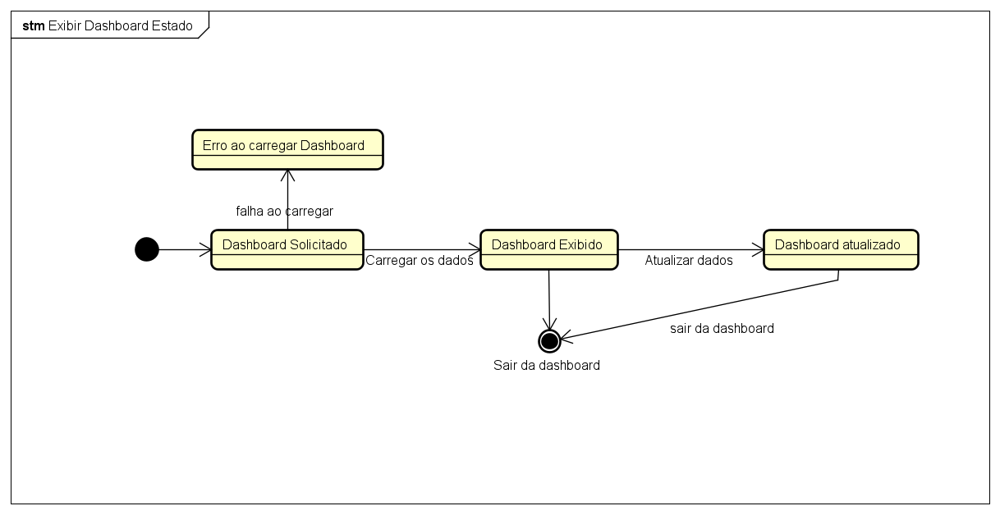
Estado do dashboard
Representa os estados de solicitação, exibição, atualização, saída e falha no carregamento.
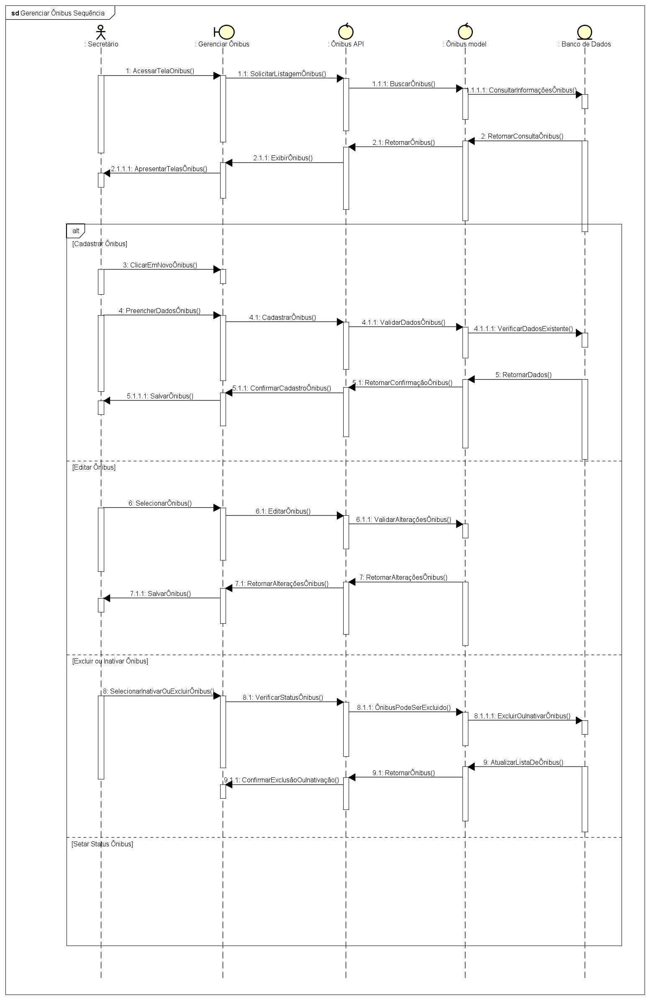
Gerenciar ônibus
Descreve listagem, cadastro, edição, inativação, exclusão e alteração de status da frota.
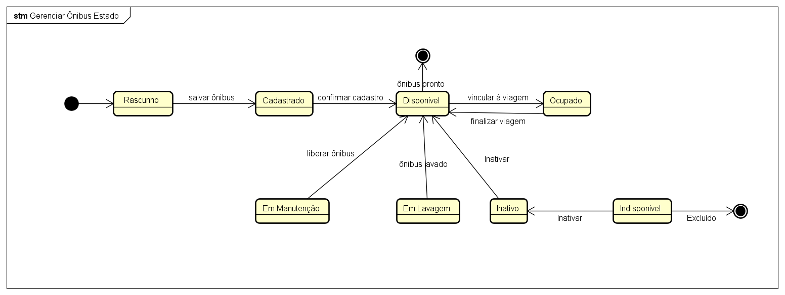
Estados do ônibus
Mapeia rascunho, cadastro, disponibilidade, ocupação, manutenção, lavagem, indisponibilidade e exclusão.
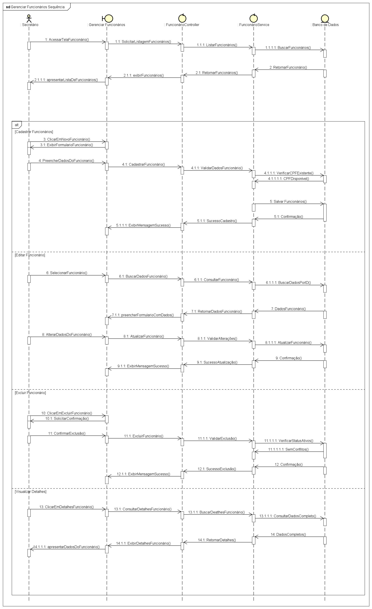
Gerenciar funcionários
Documenta consulta, cadastro, edição, exclusão e visualização detalhada dos funcionários.
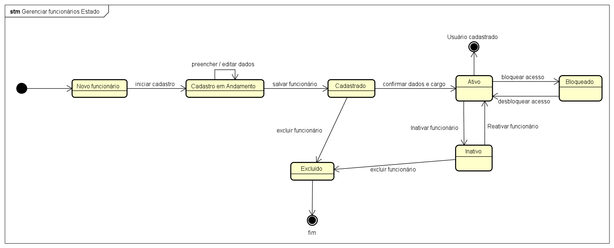
Estados do funcionário
Mostra o ciclo de novo cadastro, ativação, bloqueio, inativação, reativação e exclusão.
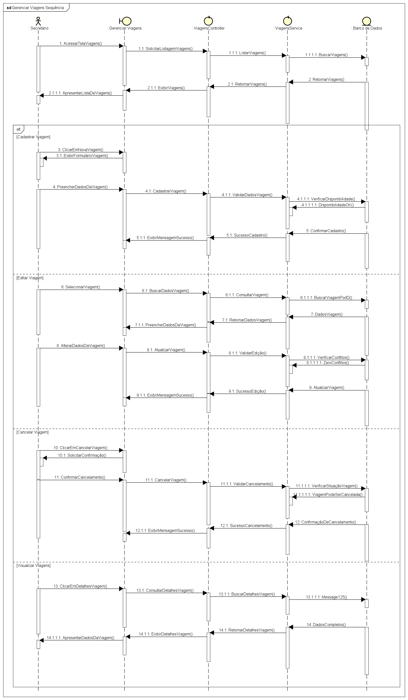
Gerenciar viagens
Organiza os fluxos de cadastro, edição, cancelamento, consulta e detalhamento das viagens.
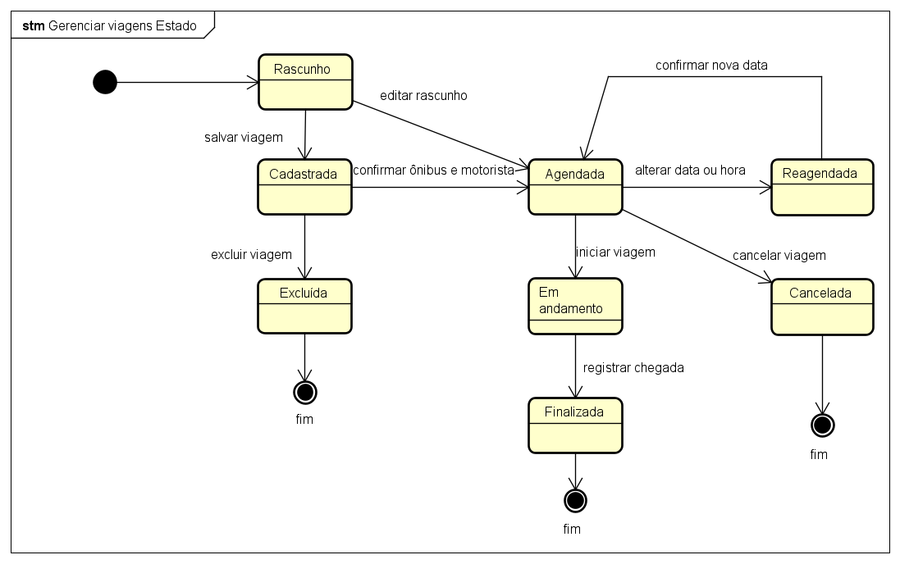
Estados da viagem
Resume o caminho entre rascunho, cadastro, agendamento, reagendamento, andamento, finalização, cancelamento e exclusão.
05 · Documentação
Artefatos usados como base
O portfólio foi organizado a partir da documentação do estágio e dos casos de uso do sistema. A pasta compartilhada reúne documentos de visão, requisitos, modelagem, workflow, DER, casos de uso, relatórios e vídeo demonstrativo.
Pedido do Investidor, Visão informal, Plano de Estágio e Especificação Suplementar.
DER SulBrasil, diagramas em Astah, glossário e workflow do processo atual.
Gerenciar Viagens, Gerenciar Funcionários, Gerenciar Ônibus e Visualizar Dashboard.
RPOD, vídeo dos CRUDs funcionais e registros de evolução do desenvolvimento.
06 · Tecnologias
Arquitetura em camadas
O projeto utiliza front-end em Vue, back-end em Django REST Framework e persistência relacional. A comunicação ocorre por API, mantendo validações e permissões no servidor.
Vue 3 + Vite
Telas responsivas, login, dashboard, formulários e serviços de API.
Django + DRF
Models, serializers, viewsets, permissões, autenticação e regras de negócio.
SQLite / MySQL
Migrations, relacionamentos, histórico de viagens e integridade dos cadastros.
Python
Django
DRF
Vue
Vite
JavaScript
HTML
CSS
Git
07 · Evolução
Estado atual do desenvolvimento
A versão atual já reúne as principais telas operacionais e as regras de negócio necessárias para demonstrar o funcionamento do sistema.
Análise e documentação
Levantamento de requisitos, visão do sistema, casos de uso, DER e workflow.
Implementação inicial
Criação dos cadastros de viagens e funcionários, API REST e telas Vue.
Ampliação da frota e dashboard
Inclusão de ônibus, status operacional, filtros, permissões e indicadores reais.
Próximos passos
Aprimorar relatório final, revisar evidências, ampliar testes e preparar entrega.